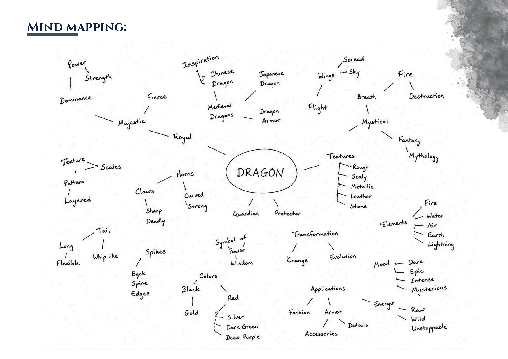
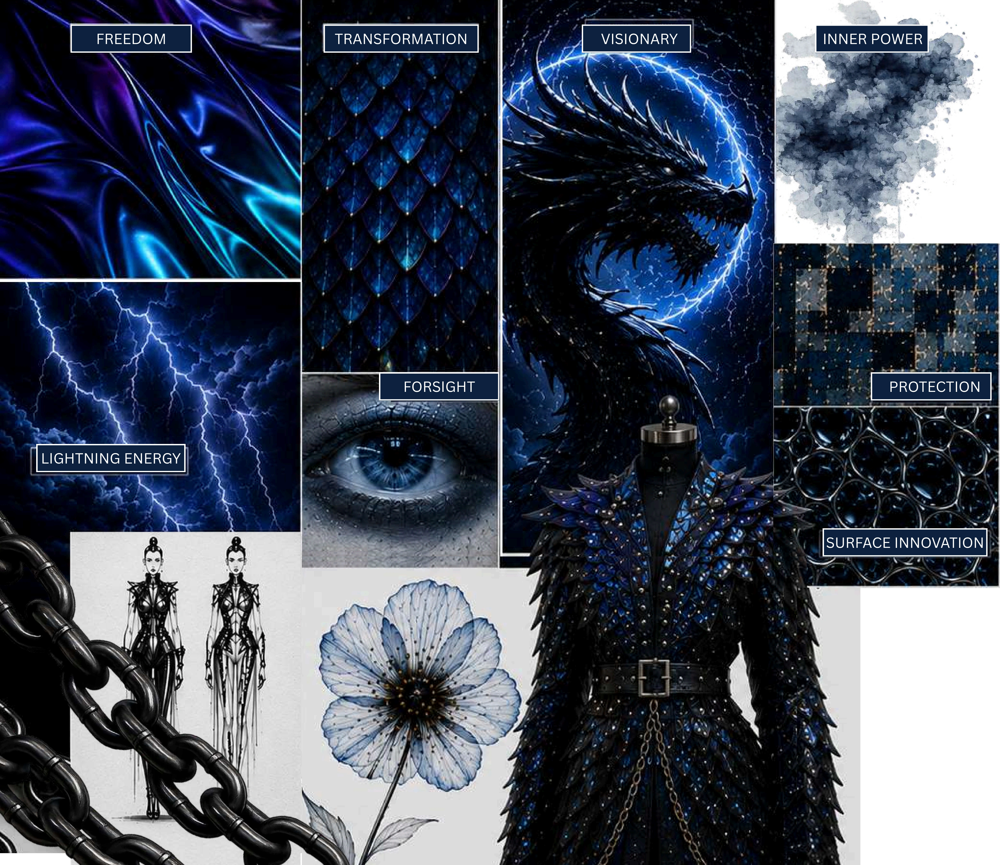
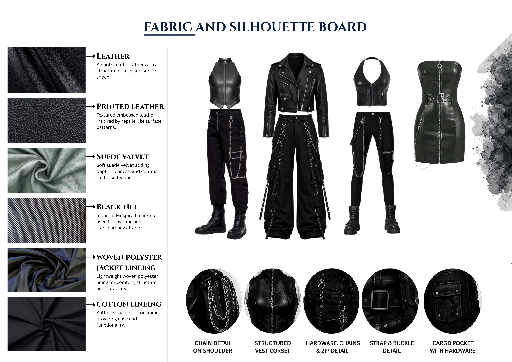
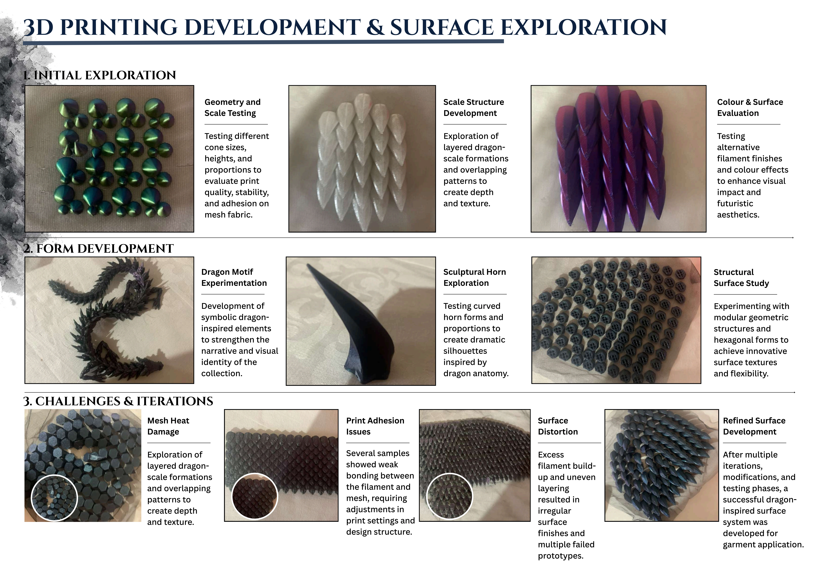
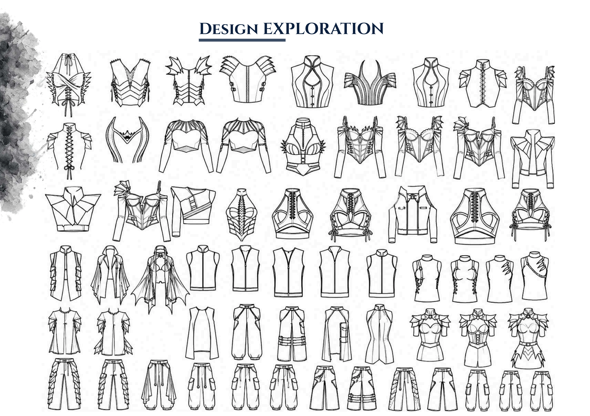
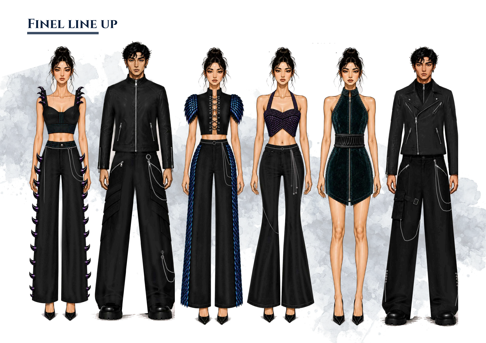

Mind Mapping
The collection began with a single word — Dragon — traced outward into every register the creature carries: power and dominance, majesty and royalty, mysticism and mythology, transformation, and the raw energy of fire, water and lightning. Texture words (rough, scaly, metallic, leather, stone) and colour words (black, gold, red, silver, dark green, deep purple) fed directly into the fabric and palette decisions that followed.

Mood Inspiration & Concept Board
The collection explores the idea of Prophetic's Halo, taken from the Dreamtech forecast S/S26, which symbolises foresight, inner power, and an elevated presence through a futuristic lens.
Rooted in the Druk (Bhutanese Thunder Dragon), the collection reimagines the dragon as a visionary guardian rather than an aggressive force — representing wisdom, protection, calm strength, and lightning-like energy. Structured, shape-shifted silhouettes are inspired by the dragon's powerful form, while surface ornamentation draws from scale-like textures and layered, armour-inspired details.

Fabric & Silhouette Board
Six core materials carry the collection's contrast between hard armour and soft body — matte and printed leather for structure, suede velvet for richness, black net for layering and transparency, and polyester/cotton linings underneath for wearability.
| Material | Character |
|---|---|
| Leather | Smooth matte leather with a structured finish and subtle sheen |
| Printed Leather | Textured embossed leather inspired by reptile-like surface patterns |
| Suede Velvet | Soft suede velvet adding depth, richness and contrast |
| Black Net | Industrial-inspired black mesh for layering and transparency effects |
| Woven Polyester Lining | Lightweight jacket lining for comfort, structure and durability |
| Cotton Lining | Soft breathable lining for ease and functionality |
Silhouette details — developed across the range — include chain detail on the shoulder, a structured corset vest, hardware/chain/zip detailing, strap-and-buckle closures, and cargo pockets with hardware, all built on wide-leg trousers, cropped bustiers and asymmetric outerwear.

Client Profile & Colour Palette
| Age range | 25–40 years, Female |
| Location | Global urban luxury markets — fashion capitals & celebrity culture |
| Income class | Affluent luxury consumers |
| Occupation | Celebrities, influencers, creative professionals |
| Lifestyle | Fashion-forward, bold & experimental, luxury nightlife and events |
| Shopping behaviour | Avant-garde fashion; sculptural silhouettes and statement pieces; exclusive designer collections; attracted to futuristic luxury aesthetics |
3D Printing Development & Surface Exploration
The surface language of the collection was developed through three stages of physical prototyping, working directly with 3D-printed filament on mesh fabric.
| Stage | Focus | Finding |
|---|---|---|
| 1. Initial Exploration | Geometry & scale testing, scale-structure development, colour & surface evaluation | Tested cone sizes, heights and proportions for print quality, stability and adhesion on mesh fabric; explored layered dragon-scale formations and alternative filament finishes for futuristic aesthetics |
| 2. Form Development | Dragon motif experimentation, sculptural horn exploration, structural surface study | Developed symbolic dragon-inspired elements and curved horn forms; experimented with modular hexagonal geometry for flexible, innovative textures |
| 3. Challenges & Iterations | Mesh heat damage, print adhesion issues, surface distortion | Several samples showed weak bonding between filament and mesh, and excess build-up caused irregular finishes across multiple failed prototypes — resolved into a refined, successful dragon-inspired surface system after repeated iteration |

Design Exploration
Over forty flat-sketch iterations of corset and bustier silhouettes were developed to arrive at the final six looks — exploring horn appliqué placement, lacing and eyelet closures, dragon-wing shoulder detailing, and cargo pocket construction across tops and trousers.

Fashion Illustration & Technical Details — Looks 1–6
Each of the six looks was carried from fashion illustration through full technical flats to a fabric-and-detail breakdown. Browse all six below.
Final Line-Up
All six looks presented together — three womenswear, three menswear, unified by black leather and denim grounded with dragon-scale, horn and feather 3D-printed detailing.

Final Product
The completed six-look collection, constructed and photographed both in the studio (on dress forms) and as styled final garment photography.
Costing Sheets
Full material, trims and cost breakdowns were worked out per garment — with the collection's main fabric sourced from an old saree, and 3D-printed "Nebula" filament detailing costed by weight and piece count across every look.
| Garment | Total Cost (₹) | Key Cost Driver |
|---|---|---|
| Look 1 — Top & Bottom | 4,773 | 3D printing — 16 pieces / cones, Nebula filament |
| Look 2 — Jacket & Bottom | 10,506 | 3D printing — 6 dragon cones, stitching cost |
| Look 3 — Top & Bottom | 5,385 | 3D printing — 32 cones & dots, Nebula filament |
| Look 4 — Top & Bottom | 5,063 | 3D printing — dragon scales & dots, Taiwan fabric bottom |
| Look 5 — Bodycon Dress & Belt | 2,361 | 3D printing — 6 dot pieces, PU rexin belt |
| Look 6 — Jacket & Bottom | 10,326 | 3D printing — 3 dragon scale pieces, Taiwan fabric |
Season: SS 2026 · Category: Avant Guard Collection · Style: Festive wear for women · Main fabric used for garment: an old saree · Target market: high-profile individuals and celebrities.
Documents
Full capstone presentation — mood boards, 3D print development, all six looks with technical flats, final product photography and costing sheets.